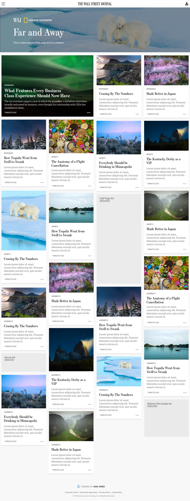

Manager, Information Architecture, Publishing
I lead the design of all editorial tools used internally at the news publications owned by Dow Jones. Our newsrooms: The Wall Street Journal, Barron's, MarketWatch, Mansion Global, Financial News, PEN, Penta.
- Driving the design of publishing platforms with industry best practices
- Leading a team of Experience Architects and other designers
- Providing conceptualization and momentum for projects large and small
- Collaboration with newsrooms for meeting editorial goals and improving workflows
- Managing and contributing to our design system and defining consistency in user interactions
- Collaborating with Directors of B2B and B2C departments, ensuring holistic, company-wide solutions
- Providing information architecture to publishing products
- Working on cross-functional teams and encouraging participation among Product, Design, and Engineering
- Defining, scoping, and budgeting for design projects and initiatives
These are the major tools I oversee:
-
NewsGrid


-
NewsPress

-
Curation


-
Image Manager


-
Chartlos
-
Live Coverage

-
[NEW] Newsletters
Newsletters have become a major publishing medium for our newsrooms. For years, we used the third-party software Campaign Monitor to build and send them, but we've decided to bring the entire process in-house. This means rethinking how we plan, construct, publish, and send all of that editorial content. And we have multiple kinds of emails going out. There are the standard, editor-written ones, but also automated newsletters with query-based content.
The PM for Newsletters wrote his Product Requirements Document and I set to understanding what our tools could currently handle, what would take some tweaking to make work, and which needed entirely new tooling structures.

Everything published by WSJ is first planned in NewsGrid, so we begin there. Eventually, the sked will have a newsletters-specific sked type with ways to track their unique publishing flow. We'll then use NewsPress (a hacked WordPress instance) to do the content editing. This will allow us to publish our newsletter content to the web (as an article), which today we don't do.

After we established this flow, the PRD expanded in scope. We needed to incorporate the automated emails into the flow. This meant deciding where the final Publish action happens. For articles, that's with a button in NewsPress. But the workflows around sending automated emails do not belong in NewsPress.
I mapped out a number of possible flows for how editors might move through our tools to publish all of the additional newsletter types.

We know we will need to build multiple views for handling the various needs of Newsletters. What we have not yet worked out is where those those views will permanently reside. We have three options: 1) build a new Newsletters tool, 2) build these features into NewsGrid, or 3) build these features in the Curation tool. We're leaning towards option 3, and so I've begun wireframing how this might look.

This is project is still in an exploration phase, with dozens of important decisions still needing made by our stakeholders. If all goes to plan, we'll be publishing Newsletters via the Screentone Suite of tools by the end of the 2023. At least in MVP fashion.
I also own and manage the design of our self-built design system:
- Screentone
Other projects and initiatives:
-
Header and Navigation Redesign


-
NewsGrid Sked Card Redesign
These are the cards which appear accross tools and are objects representing stories (technically "skeds" in newsroom parlance). In many places they can be dragged 'n dropped, or rearranged by order.

-
NewsGrid Asset Cards Redesign
On a story sked (detail page for article info), these are interactive components which represent assets which could be used in the article.

-
Newsroom worflow through suite of tools
To better understand how our newsrooms move through our tools to get a story from conception to publication, I mapped out the general flow.

WSJ.com
From January 2017 to September 2019, I was a product designer for the Wall Street Journal website and mobile apps. I began on a 3 month contract as a front-end designer, building protoypes of the new iOS app and establishing the first Design System for WSJ digital products. In April of tha
Some select projects:
-
Live Coverage [Case Study]
Case Study
Live Coverage
We recently rebuilt the new Live Coverage experience for the Wall Street Journal. I had pushed for this for years. As someone who really loves a blog, the old presentation for our live coverage really bugged me. The layout of the page had struggled to properly convey the immediacy of the reporting, or to even feel live. The page heading itself was about 2/3rds of the page. Or well passed the viewport height if there was an image. The first post looked small and insignificant, sandwiched between a Top Posts widget and an ad. This particular product was begging for an update.

In summer 2019, the newsroom started looking ahead to the reporting of the 2020 U.S. Presidential Election primaries, Live Coverage finally landed on the product roadmap. I was ready. And the timing happened to be perfect for me, as well. I had just moved from working on the reader-facing WSJ products to the newsroom tools team. This meant that I was well positioned to design the new Live Coverage page, and to also design the new publishing tool for it.
It's rare for a custom CMS to be designed along with a new publishing product. It's usually either something like a Wordpress install to hack together what the front-end needs, or it's a front-end designed around the limitations of the CMS. This is especially true for products in legacy media as old as the WSJ. Roadmaps don't often come together like this with newsroom needs timed so perfectly with engineering availability. The Live Coverage product fell right into this sweet spot.
I made sure to take full advantage of it. Because we were prioritizing a mobile-first experience, the tool could present a new post beside a stream of what's already been posted. A reporter or editor can write inside a high fidelity WYSIWYG field while also having what's been published right in view.
We also introduced a couple brand new concepts to our Live Coverage reporting: a Featured Post position for presenting highly valuable context for the content stream below, and a Primary Media position for sharing a map, chart, or image that is integral to the event. Here is the page in the tool for posting to these locations, with little illustrations for reminding editors where that content will appear.

And here is a design for a Live Coverage event, with everything in place. You can see that the content hierarchy establishes priority in the order we wanted to stress. The most recent post is top left, and about 2/3rds of the page width, large and prominent. A Featured Post takes that place if there is important context editors want to stress. The page-level meta info is packed into a small box on the right, with Primary Media content just below.
Another brand new feature we built into the tool was the ability to have Pre- and Post-Coverage views of the page. For SEO and link-sharing purposes it helps to have a live URL ready to go well before the event begins, and the page itself makes clear when the event coverage is going to start. When the event is over, the page displays that explicitly, as well.

The tool works really well. We've had a great response from our editors. What's even better than praise, though, is seeing our Live Coverage reporting increase in amount of coverage posted, and a much greater frequency of Live Coverage events being created. The icing on the cake is hearing that for the period between the 2020 election and Biden's inauguration, the Live Coverage pages were getting page views rivaling those of the WSJ.com homepage. Not only that, but the live coverage page views for the first three weeks of 2021 have already beat the entire amount of page views for live coverage in all of 2019. It's absolutely time to call this project a huge success. I couldn't be prouder to have worked on it, nor to have been a part of the great team who brought it to life.
More Views


-
WSJ.com | Markets [Case Study]
Case Study
WSJ.com Markets
Our agile process at the WSJ means we are continually updating and redesigning the parts of our product which need attention. One of the highest trafficked pages, and the longest neglected, was our Market Data Center. The pages were so old they used headers, footers, and color palettes we’ve long since retired elsewhere on the site. We also knew we weren’t leveraging the provided data to their full potential. Many pages and useful tables were buried and hard to find. And so, with new editorial guidance and support, we set to updating the interface and the experience.
You can see for yourself how uncoordinated our tables and charts had grown to become.
These were spread across dozens of pages, lost among navigational chaos. This is where the UX research work began. Who was using this data? How often? Did we have outdated tables which were no longer needed? Was there any data relevant to our readers we weren't providing? Our UX team diligently went about collecting answers from our subscribers.
As for interface design, I set two primary goals for the tables and charts: 1) that they maintained a strong visual coherence between them, and 2) they would look at home on any WSJ.com page they might be used. I began with the smallest elements and worked myself up into fuller compenents. For accessibility, I set the table text size to 16px and added as much margin I could get away with. We already had a color palette in our design system, which gave me proper guardrails.
What I ended up with was fully on-brand, felt consistent, and was flexible without being constraining. Before long, any new component needing designed was falling into shape without any new patterns or type treatments.

I also had the good fortune of spending some time with the designer of the Retina typeface, Tobias Frere-Jones. He assisted with some Retina-specific word-spacing, and he revealed hidden alternate figures such as a numerate negative symbol and a syntactical-descriptive colon drawn specifically for data like ours. Retina was designed for exactly this type of content, so it was extremely fun to dive into.
We now have a robust system for developing any table we need now or might need in the future.
We structured the Market Data pages on the same 16 column grid we use across WSJ.com, including our 4 column right rail for secondary content. Keeping the right rail unchanged provided us with two benefits. We could use the same advertising slot sizing we already use elsewhere. And any new Market Data component we build would fit on any other page if we decided to do so; other pages like the Markets section front or Economy articles.
Once this structure was in place, the pages were easy to lay out. We took the learnings from the user research and listed out each and every table which belonged on the various pages.
More Views


- New iOS app, launched in 2017
-
Breaking News Banner
Updated the top-of-page banner to better match the WSJ Design System, and to work responsively.
-
Tappable Stories
A custom wsj.com article type which used the new tap pattern established by Snapchat and Instagram.


-
Article Share Tools & Settings

-
Article Collection Tile Layout Page


-
User Commenting on Articles


-
2018 Olympics medal count banner and page

-
Fullscreen Image Slideshow

- Image Slideshow component
-
WSJ Video Featured Series


- New WSJ.com homepage (unlaunched)
- WSJ Exclusive Article branding
Dow Jones
Front-End Designer working on Wall Street Journal projects
- Built html/css/js prototypes of new iOS views
- Initiated a design system for quicker protoype building. This was the beta for the first official design system made for WSJ products which I later helped build out.
- Design work for the new iOS app under the lead of the Design Director.
The Barnes Foundation
- Design and development of a microsite for their education department: Barnes Classes. Built with Squarespace.
- Design and development for a donation microsite: give.barnesfoundation.org (now offline). Built with Squarespace.
The Dot Blockchain Music Project
- Design of the alpha release for this potentially industry-changing app for anyone and everyone working in music. Dot Blockchain Music. Read Benji Rogers' write-up on Medium. Winner of the 2016 Musically award for Best Music Startup (B2B)
CardStack
- Sub-contract work for Acquia: UX/UI design and front-end development for an as yet unannounced, unreleased product.
- Sub-contract work for the new AIA.org (The American Institute of Architects): front-end development and some minor design. (We also designed and developed a brand new CMS during this project, which was planned to have an open-sourced release.)
- Development of the CardStack website.
Portigal
- Design and development of Portigal.com for the very knowledgable and very kind Steve Portigal.
Tendr
- Mailchimp email template design.
Run or Pass
- UX consulting for an iOS app for football fans.
Alice & Fain
- Album art design for Be Still EP.
Hillary For America
- Volunteered a dozen hours working for the campaign design department. Mostly designing the PayPal integration into their donation flow.
Web and Product Designer
I was the sole designer on the internal tech team at the museum. I also helped with a significant amount of front-end engineering, and setting up a design system for all of our work.
Ask Brooklyn Museum
Read the case study. Reviews from The New York Times and The Verge.
- Project Branding and style guide design.
- iOS app design.
- Web app design and some front-end development.
BrooklynMuseum.com
Read the case study.
- Content audit of the old website
- Full redesign of the Museum’s website.
Gallery Touchscreens
- Design of iPad and touchscreen interfaces for Museum galleries.

Front-end Developer at a small design studio focusing on non-profit clients.
Selected Projects
Design and Engineering
Designed and built websites for a variety of clients.
- L-Train Films
- Fly’s Eye Films
- 587x286
- Clay Fain
- Denizen
- Kick Republic
- Wee Beastie
- Air Master
- Jon Baker
- Machine Dream Records
- Mediander
- Editor’s Collective
Graphic Design
Posters, advertisements, and product packaging.
-
Isle of Rhodes (band)


- Hirschen Singer & Epstein
- Proper Cider
- Rob Farren
- Trumpeter Swan (band)